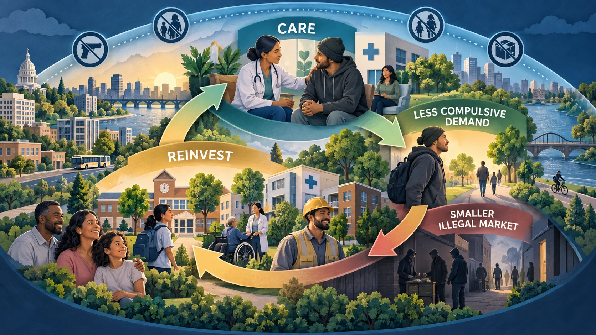

The price of drug policy includes lost lives, lost human potential, enforcement, healthcare, illegal-market violence, and consequences carried by families.
Opening story · Human capital
11.1 Andrew Sadek: an unfinished education and an unresolved death
Content note: This documented case discusses coercive pressure, confidential-informant work, and an unresolved gunshot death.
Andrew Sadek (1993–2014), an electrical-technology student nearing graduation. Family photograph published by the Associated Press and reproduced here for educational discussion; source article.
Andrew Sadek was a 20-year-old electrical-technology student at the North Dakota State College of Science. In 2013, confidential informants purchased marijuana from him twice—approximately 4.5 grams valued at $80 in total. Because the sales occurred on a college campus, an officer confronted him with the possibility of severe felony charges and prison. Andrew agreed to work secretly as a confidential informant and completed controlled marijuana purchases for a regional drug task force.
Andrew disappeared shortly before graduation in May 2014. His body was found in the Red River with a gunshot wound. The weapon was not recovered, and the manner of death remains undetermined. His family disputed suggestions of suicide and argued that the informant arrangement exposed him to danger. His case later contributed to North Dakota protections commonly called Andrew’s Law.
Accuracy matters: available court and investigative records identify the sales and controlled purchases as marijuana transactions—not heroin. Andrew’s internal thoughts and the precise salary of any anticipated job are not established in the public record used here. We can analyze fear of labeling and lost career potential, but must identify those as sociological interpretation rather than proven fact.
What was lost?
Human capital Education, technical skill, anticipated employment, future production, taxes, and innovations that would have accumulated over a lifetime.
Family and community Relationships, caregiving, social participation, grief, investigative costs, and diminished trust in institutions.
Public resources Campus policing, task-force operations, controlled buys, investigation, litigation, and later legislative reform.
Labeling theory as an interpretation
A threatened felony label can collide with a student’s existing identity, anticipated career, and relationships. Secrecy may isolate the person from parents, attorneys, counselors, and other sources of social support. Labeling theory asks whether fear of public exposure and a spoiled identity intensified Andrew’s pressure. It does not permit us to diagnose his thoughts or declare how he died.
Cost-benefit analysis
The economic question is not whether marijuana is completely harmless. It is whether the enforcement strategy’s total benefits exceeded its foreseeable costs. Andrew’s case asks whether obtaining several additional low-level marijuana cases justified the risks placed on an inexperienced student informant and the human capital society lost.
Continue below: Andrew’s story opens the economic question; the interactive model now lets you examine the public costs, assumptions, and alternatives on this page.
11.2 Andrew’s Law: when a human loss changes policy
North Dakota enacted protections for confidential informants in 2017 after Andrew’s death brought national attention to the risks of recruiting young, low-level suspects. The law does not settle what caused his death. It represents institutional learning: if an agency asks a civilian to enter a dangerous environment, safety, informed choice, documentation, and supervision cannot be treated as afterthoughts.
Andrew’s Law moves confidential-informant decisions toward written information, suitability assessment, trained supervision, and safety planning. Original educational illustration.
Written agreement Terms, promises, duties, and limits should be recorded rather than left to fear or memory.
Rights and support The person must be told about silence, legal advice, and the right to decline or stop cooperating.
Suitability and risk Age, maturity, substance use, mental health, offense severity, and foreseeable danger require individualized assessment.
Training and safety Agencies need trained personnel, operational planning, monitoring, and protective measures.
Economic lesson: prevention has a cost, but failing to protect an informant can impose far greater costs—death or injury, family loss, investigation, litigation, lost trust, and unrealized lifetime productivity.
11.3 Who pays? An interactive policy cost-and-benefit model
Andrew Sadek’s story opens the economic analysis by making visible the lost human capital and institutional costs that conventional budgets can miss.
The minus sign in an accounting table means revenue is subtracted
from cost. To make that unmistakable, this model writes it as a
positive revenue offset. It compares the estimated
annual burden placed on the American public—not whether government
agencies themselves earn a profit.
The public bill extends across institutions. Enforcement is only one part: healthcare, violence, courts, corrections, lost work, premature death, and family disruption also carry costs.
EnforcementFederal, state, and local agencies; interdiction; investigations; courts; supervision.
Health and mortalityOverdose response, hospital care, infectious disease, disability, and premature death.
Institutional lossesWorkforce participation, family care, education, housing stability, and community trust.
A true-cost example: the 2017 U.S. opioid burden
Opioid use disorder
$471B
Fatal opioid overdose
$550B
The CDC estimate totaled $1.021 trillion. It included healthcare, treatment, criminal justice, lost productivity, reduced quality of life, and the value of lives lost. These are 2017 estimates—not today’s price tag and not the cost of withdrawal alone.
Estimated annual U.S. public cost
Prohibition-focused supply control
Medical regulation without vice tax
Medical regulation with graduated health/vice tax
Enforcement, agencies, interdiction
$45–$80B
$15–$30B
$18–$35B
Courts, incarceration, probation and parole
$20–$40B
$5–$15B
$5–$15B
Illegal-market violence, investigations and victim costs
$15–$40B
$5–$15B
$5–$15B
Emergency healthcare and supply-related harm
$50–$120B
$30–$80B
$30–$80B
Lost work, disability and reduced productivity—including incarceration and post-release employment barriers
$150–$300B
$90–$220B
$90–$220B
Economic valuation of premature death
$450–$750B
$200–$500B
$200–$500B
Treatment, prevention, housing and recovery
$30–$60B
$65–$125B
$70–$140B
Product testing, licensing and clinical oversight
Minimal
$5–$15B
$8–$20B
Illustrative gross societal cost
$760B–$1.39T
$415B–$1.00T
$426B–$1.03T
Revenue returned to public programs
$0–$5B offset
$0–$10B offset
$35–$90B offset
Illustrative net cost to the public
$755B–$1.39T
$405B–$1.00T
$336B–$995B
Read this correctly: these ranges are a classroom counterfactual model, not a completed nationwide experiment. The estimates overlap, some categories are difficult to separate, and regulation would reduce some harms rather than erase addiction. The CDC’s often-cited $1.021 trillion estimate covered 2017 opioid use disorder ($471B) and fatal opioid overdose ($550B)—not withdrawal alone.
Move the assumption: how much opioid burden might policy prevent?
Move the slider from 0% to 60%. The model multiplies your assumption by the CDC’s $1.021 trillion estimate. It does not claim that medical regulation automatically produces that reduction.
hypothetical burden avoided
The family institution carries costs that dollars miss
Role disruption Caregiving, parenting, household labor, transportation, and income may shift to other relatives.
Intergenerational effects Children may experience instability, grief, foster placement, school disruption, or stigma.
Time and emotional labor Hospital visits, legal advocacy, treatment searches, childcare, fear, and bereavement rarely appear completely in fiscal totals.
Work and productivity: costs are larger than absenteeism
Presence Absence, turnover, treatment time, incarceration, and premature death remove labor from workplaces.
Performance Impairment, withdrawal, untreated pain, stress, and sleep loss can affect concentration and reliability.
Safety Some safety-sensitive jobs carry increased consequences from impairment, but a positive test does not measure present impairment for every drug.
Human capital Interrupted education, blocked licensing, criminal records, and lost promotions can depress earnings long after drug use stops.
Punitive pathway Testing → label or dismissal → income and insurance loss → greater strain → possible worsening of health and instability.
Employee-assistance pathway Safety assessment → confidential help → treatment or accommodation when appropriate → return to stable work and preserved skills.
Privacy question: workplace drug testing requires a person to surrender identifiable biological information as a condition of access to employment. A complete cost-benefit analysis must consider safety, accuracy, due process, privacy, and whether supportive intervention produces better outcomes than automatic exclusion.
Incarceration can continue costing society after the sentence
Jailing a person for using or selling drugs creates an immediate public expense and removes that person from paid work, education, caregiving, and family life. The economic loss may continue after release: a criminal record, interrupted schooling, weakened job history, licensing restrictions, stigma, and difficulty obtaining housing can all reduce the chance of stable employment. These consequences can lower tax revenue, increase family hardship, and make return to an illegal market more likely.
Cost-benefit question: if enforcing a policy produces greater total harm and public expense than the drug behavior it is intended to prevent, continuing that policy is not automatically rational. Society should compare it with credible alternatives and measure actual outcomes.

Demand-side harm reduction changes the economic cycle. Care reduces crisis-driven purchasing; less illegal-market revenue can reduce associated harms; and public savings can be reinvested in the institutions that help people remain healthy and productive.
The demand-side economic logic
Accessible care Medication, treatment, education, housing, and mental-health support reduce crisis-driven purchasing.
Less compulsive demand Fewer purchases and safer regulated access reduce revenue available to illegal suppliers.
A smaller illegal market Lower revenue can reduce recruitment, territorial violence, adulteration, and repeated arrest.
Reinvest the savings Use avoided enforcement and incarceration costs to strengthen care, families, schools, and employment.
Important qualification: helping people reduce or stop harmful use can shrink an illegal market, but demand reduction alone cannot guarantee that every dealer disappears. Markets can adapt, and some people will continue to seek drugs. Regulation therefore combines care with targeted enforcement against coercion, violence, sales to minors, diversion, and unlicensed supply.
The Big Three analyze the same dollars differently
Structural functionalism: What keeps institutions working?
Drug-related illness, premature death, incarceration, post-release exclusion from employment, and unstable illegal markets remove people from families, schools, workplaces, and communities. These are dysfunctions because they interrupt role performance and institutional stability. Regulation may perform the manifest function of controlling purity and access, while treatment and fair opportunities after release restore participation. A functionalist would still ask whether regulation creates latent dysfunctions such as new bureaucracy, industry dependence, or inadequate access.
Course synthesis: from a political symbol to a human-care question
This course approaches drug policy through harm reduction: people who use drugs remain human beings entitled to accurate education, healthcare, dignity, and practical ways to reduce injury and death. The goal is not to pretend that every form of use is harmless. It is to compare whether punishment-centered policies or regulated health-centered policies produce better outcomes for individuals, families, institutions, and society.
Symbolic interactionism explains how change becomes possible. Words, labels, laws, school lessons, medical encounters, media stories, and everyday conversations construct what a drug—and a person who uses it—means. Society changed the meaning of cigarette smoking over time. It can also replace the single image of the dangerous or immoral “drug user” with the more accurate understanding that nearly everyone uses drugs in some form and needs the knowledge to make safer decisions.
Conflict theory explains why change can be difficult. Drug definitions distribute authority, funding, employment, contracts, votes, professional status, and profit. Political actors may use fear of drugs as a campaign issue, while agencies, industries, illegal suppliers, and professional groups may compete to control both the definition of the problem and the resources devoted to it. This does not mean that every participant acts in bad faith. It means reform can threaten established interests even when another approach may produce greater public benefit.
Structural functionalism supplies the test. Does a policy reduce death and illness, help families perform their roles, return people to education and employment, stabilize communities, and use public resources effectively? A harm-reduction system must be judged by those measurable outcomes—not merely by whether it sounds permissive or punitive.
The larger possibility: education can help people become informed users; regulation can place drug management within medicine and public health; and carefully designed health taxes can help finance education, treatment, rehabilitation, and healthcare. Policy then becomes less about winning a moral campaign and more about how a society takes care of people.
Historical and contemporary comparisons
Qing China: availability, profit, coercion and weak control
The nineteenth-century opium crisis was not simply an example of “too little regulation.” China prohibited opium while foreign traders expanded a profitable smuggled supply, silver flowed outward, domestic production grew, and imperial conflict weakened enforcement. Addiction damaged some households and work, but war, unequal treaties, poverty, corruption and foreign commercial power were also part of the structure.
Image: artistic reconstruction, not a historical photograph.
Netherlands: selective regulation and medical management
The Netherlands does not legally sell every drug through pharmacies. Cannabis sales in qualifying coffee shops have long been tolerated under conditions, and a controlled-supply experiment entered its experimental phase in 2025. The country has also used tightly supervised heroin-assisted treatment for a limited group with chronic, treatment-resistant opioid dependence.
Calling drugs “boring” is best treated as an interpretation of pragmatic normalization: reduce glamour and moral panic by making care routine. It is not an official description of every Dutch policy.
A self-supporting harm-reduction cycle
Regulate Control strength, purity, age, setting and access.
Tax by measurable harm Use graduated rates without recreating an illegal market.
Fund institutions Education every school year, healthcare, treatment, housing and recovery.
Measure results Track death, health, use, crime, equity and family stability; revise policy.
Regulation is not unrestricted legalization. In this harm-reduction model, medicine manages dependence and health; public health regulates products and education; law still addresses violence, coercion, impaired driving, diversion, unlicensed sales and sales to minors.
Luo, F., Li, M., & Florence, C. (2021). State-level economic costs of opioid use disorder and fatal opioid overdose—United States, 2017. Morbidity and Mortality Weekly Report, 70(15), 541–546. https://doi.org/10.15585/mmwr.mm7015a1